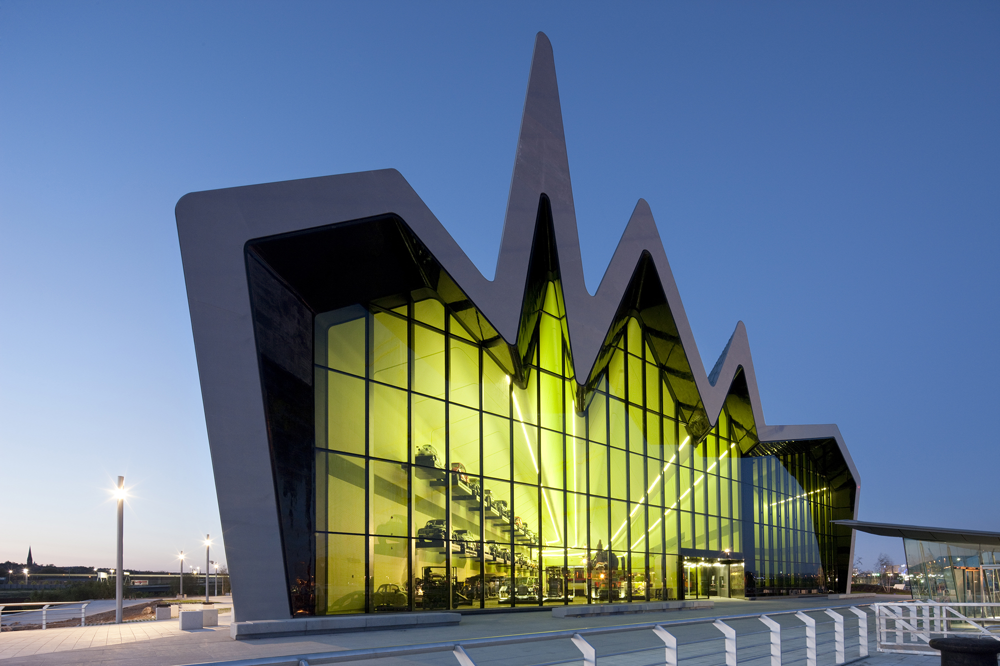
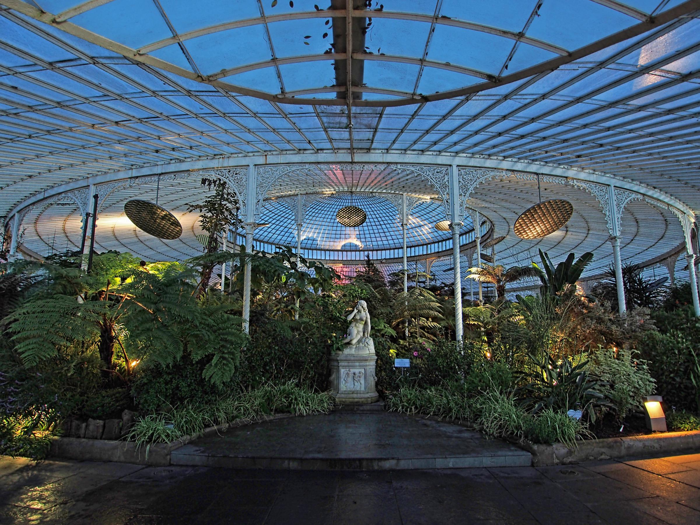

Activities in Glasgow
Discover some of the best things to do in Glasgow!

Buchanan Street
Explore Glasgow’s vibrant shopping district filled with stores, cafes, and street performers. It’s a must-see for shopping and soaking in the city atmosphere.
Learn More

Riverside Museum
Discover Glasgow’s transport heritage, from vintage cars to locomotives, in this stunning modern museum located by the River Clyde.
Learn More

Glasgow Botanic Gardens
Take a peaceful walk through lush gardens, visit the famous Kibble Palace, and enjoy the natural beauty in the heart of Glasgow.
Learn MoreGlasgow Green
Relax at Glasgow’s oldest park, home to the People’s Palace and the Doulton Fountain. It’s a perfect place to unwind or learn about the city’s history.
Learn More